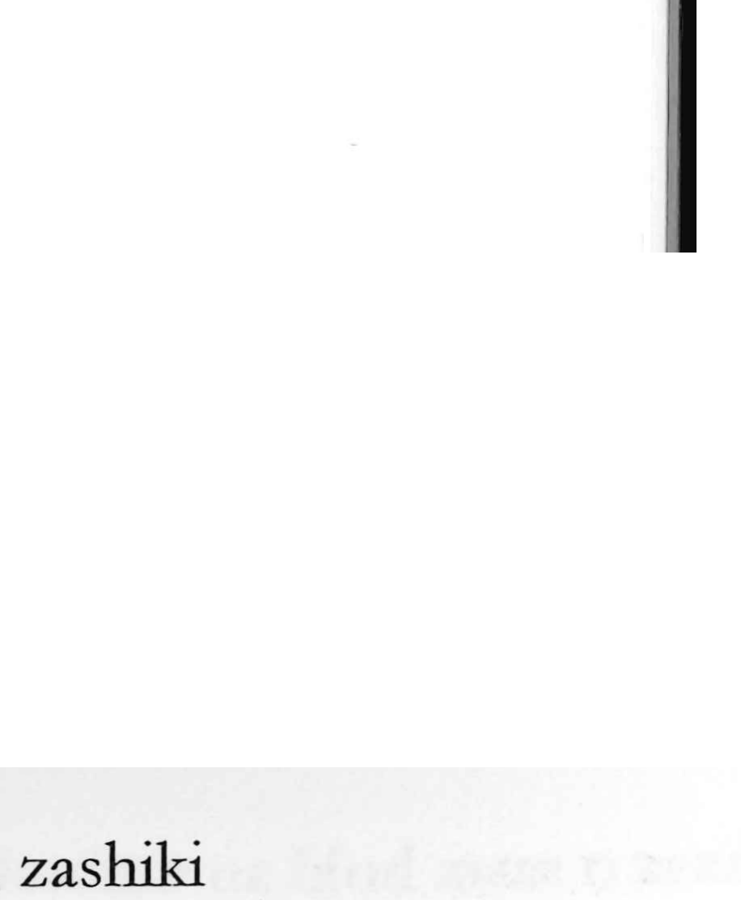

Explanation
Shirakawa explains 座 as a picto‑phonetic character built on 坐. In the old form of 坐, two people sit to either side before the earth deity (土主), because they are being tried; the graph thus first pictured those lined up for judgment, and from there came to mean simply “to sit.” When such trials were held not only at shrines but also in ancestral mausolea, the sheltering roof sign 广—depicting a mausoleum’s eaves—was added to 坐 to form 座. With this, 座 originally indicated the sacred seat or place of judgment before the earth deity. In Japan that sense survives in counting deities or Buddhas as 一座, 二座, and in the medieval za, guilds protected by temples and shrines such as the oil guild (油座). Today 坐 is used for the act “to sit,” while 座 designates a seat or seating space (as in 座席, 座敷), and in Japanese usage 座 often stands in for 坐 and is read suwaru.